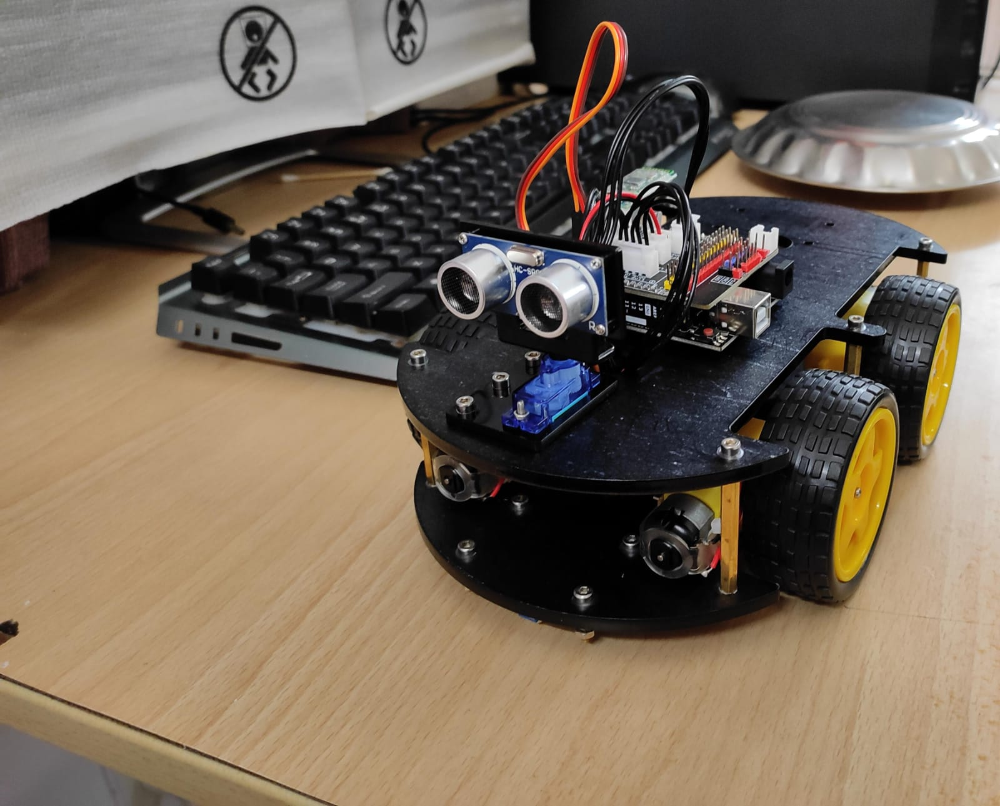
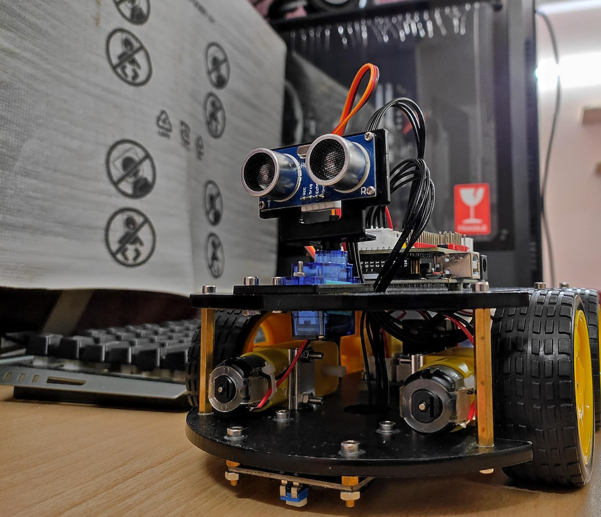
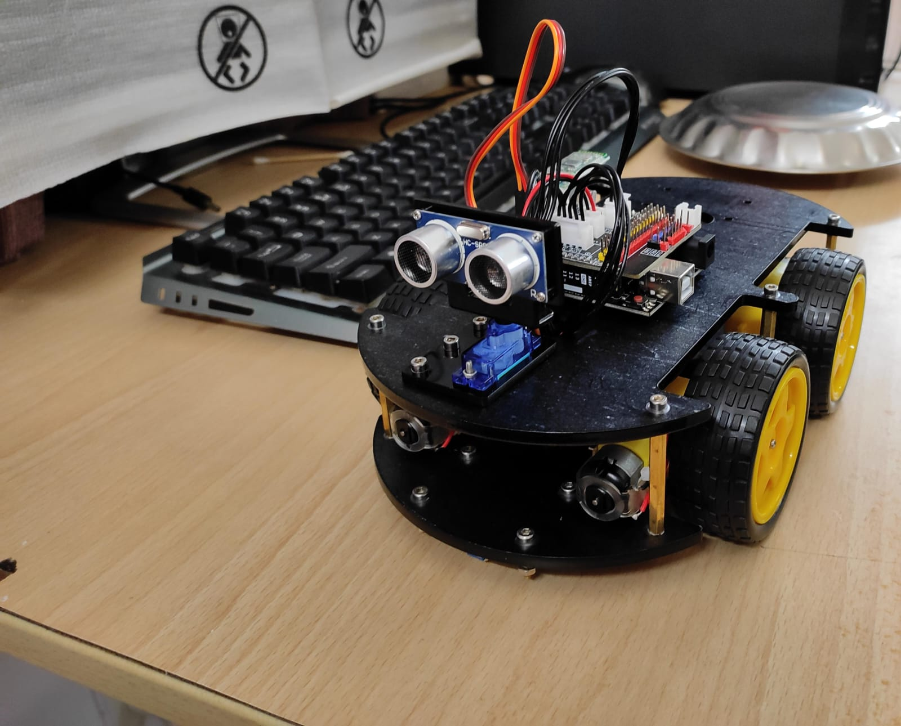
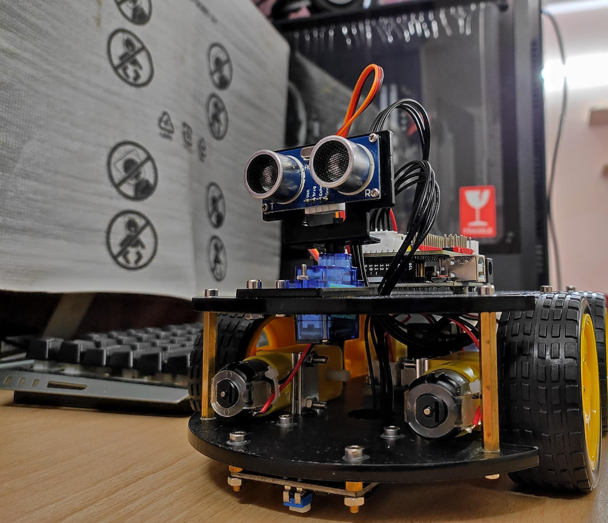

Dear Visitors,
Welcome to our innovative platform that is set to transform the way we approach soil management and agriculture. We are excited to introduce our groundbreaking solution: the Predictive Mobile Bot.
In today's rapidly changing world, sustainable and efficient agriculture is more critical than ever. Proper soil management is at the heart of this endeavor. Our Predictive Mobile Bot is designed to help farmers, agronomists, and landowners optimize their soil health, crop yield, and resource utilization.
Gallery

 



Our Team Members

Sonali - Project Manager
Yash Kaushik - Code Developer
Abhijay - Prototype Tester
Garvit - Researcher
Joshua - Hardware Degsiner
Prashant - Prototype Delevoper
We are here to assist you with soil management and prediction using a mobile bot. Whether you need advice on optimizing your soil quality for agriculture,
landscaping, or any other purpose, I can provide insights and recommendations. The mobile bot leverages advanced technology to offer real-time data and
predictions for efficient soil management, helping you make informed decisions and achieve your desired outcomes.